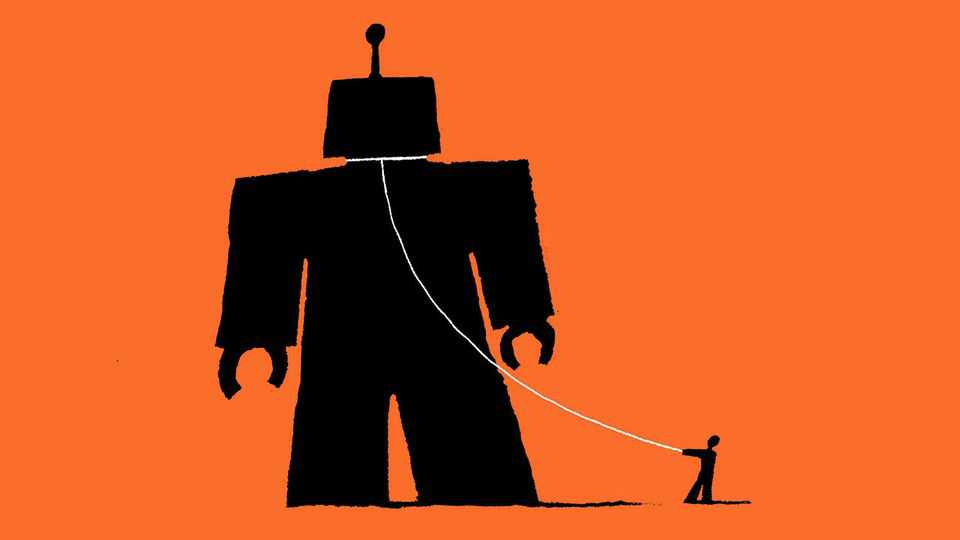

A no-rules approach to AI is mad politics and worse policy
Do not let it rip

Oct 8th 2026
Who can blame MAGA for wishing it were still early 2025, when Donald Trump was fresh off an election win, back in the White House and relatively popular with voters? One place where time has stood still, though, is artificial-intelligence policy. The technology has advanced ferociously, and is now launching cyber-attacks and solving reams of problems that have confounded the best human mathematicians. Yet the attitude to AI in the Trump administration is still just three words: “Let it rip!”
Two years ago that approach was flawed but defensible. AI risks were mostly theoretical. Strangling a promising technology with overly onerous rules would have been a mistake. But in late 2026 “let it rip” is reckless, as a matter of politics and policy. There must be a better way.
Voters in America have long been leery of AI. Until recently, however, it did not feature much in elections. When Mr Trump took office in January 2025 a quarter of Americans rated AI as an important issue. Now half do. The backlash against data centres, which fuses techno-fears with NIMBYism, has scrambled midterm races from Michigan to Texas. Having for years ignored researchers sounding the alarm about AI safety, voters are growing concerned that AI might cost them not just their jobs but their lives, too. Squint and the cyber-attack on Hugging Face, a coding platform, by a “swarm” of hundreds of unmonitored OpenAI agents looks like a trial run for a robot takeover. A concerned boffin who quit Anthropic in September, accusing the lab and its main rival, OpenAI, of “gambling with our lives”, has become a minor celebrity and cable-news fixture.
As with his other unpopular policies, like tariffs and war in Iran, Mr Trump does not seem to care. A charitable reading is that he sees AI regulation as a Chinese ploy to hobble America. Insiders believe that he is worried that limits on AI could crash the soaring stock market, which is a bet on the technology succeeding. Either way, his fellow Republicans, who in contrast to the term-limited president will keep facing voters, are realising that the “pro-AI” label is toxic. Even candidates as fire-breathingly MAGA as Ken Paxton, running in Texas for the Senate, are pledging to block some data centres. By next year, bipartisan pressure may build in Congress to do something.
That is encouraging, for “let it rip” fails on the substance, too. Mr Trump’s AI advisers argue that today’s liability laws are enough. Fear of damages and the cost of insuring against them keep makers of aeroplanes, cars and drugs in line, they say. But courts are too languid for the age of rapidly advancing AI. Lawsuits take years to resolve in established industries, let alone a new one with no precedents for judges to call on. By the time they issue a ruling, AI might have transformed the economy—or caused a cataclysm.
Mr Trump’s idea of “tremendous self-policing” is not the answer, either. The “let it rip” crowd forget that world-changing new technologies always invite new rules. Aeroplanes need inspections and air-traffic control. Cars require right of way, speed limits and seat-belts. Novel drugs must be tested to see if they actually work and are safe. It is hard to say how many plane crashes, road accidents or medical side-effects regulators help avert. But hardly anyone thinks the optimal amount of regulation in these areas is none at all.
The world has, mercifully, so far avoided an AI Chernobyl. No lives and no real money were lost in the Hugging Face attack, the most concerning to have come to light. But the odds of disaster are shortening. In a few months open models could be as capable as Anthropic’s Mythos, the first to be seriously adept at hacking. If politicians wait for a catastrophe before writing the rules, the ones they draft in haste in its aftermath are likely to be poor. Plenty of bad ideas are already out there, from data-centre moratoriums to Bernie Sanders’s “superintelligence ban”. And bad laws may be just the start: the terrorist attacks of September 11th 2001 inspired a rethink of aviation safety but also two long wars.
What might wise AI regulation look like? The goal cannot be to stymie technological advances altogether. That would indeed cause democratic America to cede the frontier to authoritarian China, and forgo remarkable scientific and economic opportunities. Making AI labs lock up their cleverer models indefinitely, even if they could be contained, could create a dangerous gap between them and everyone else.
Instead, America should mandate that advanced models be thoroughly tested and, if necessary, held back until they have safeguards to block dangerous use-cases, like building bioweapons. Companies must be required to report safety incidents and whistleblowers who do so in their stead granted protection. Independent evaluators should be embedded with major labs, just as bank examiners are with lenders.
Some of these ideas were hinted at in the voluntary pledges that Mr Trump recently coaxed out of the big AI firms. They should be spelled out and made mandatory. By signalling that it is serious about regulating AI, America would also foster international co-operation, particularly with China. As the models advance, so must the rules. “Let it rip” is a dead end. ■